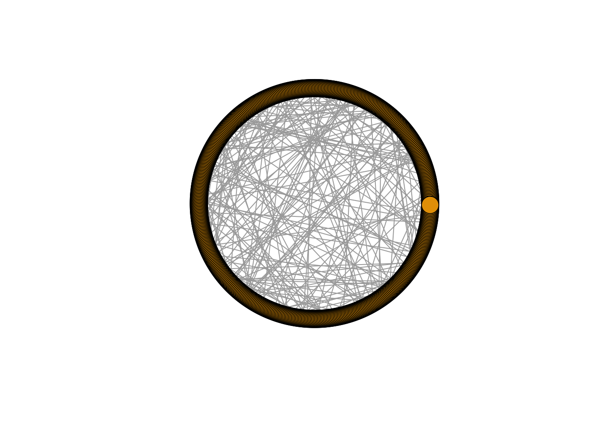

library(tidyverse)
library(igraph)
library(sand)
library(igraphdata)Network models in practice
Setup
Pay attention on the packages sand and igraphdata. The first one contains all the different network datasets used by (Kolaczyk and Csárdi 2020). Then, the second one contain network data to be used together with the igraph package. More information can be found here and here. Feel free to explore these network data on your own time.
Aims of the practical
Simulate network models
Analyse their key attributes
Compare them
igraph enables us to generate networks based on some of the some key network models we discussed. I list below some of these functions:
sample_gnp()sample_smallworld()sample_pa()
Go to igraph’s webpage and familiarise yourselves with the syntax of these functions.
Task: Create three networks using these three functions with, let’s say, (n = 500) nodes each.
Visualise and compare these networks.
Importantly, just before you generate a network with one of the above three functions you will need to define a random seed for reproducibility reasons, e.g. set.seed(55).
Question: Without defining a random seed, generate a network as per the above, run some type of quick analysis about this network and then repeat the code by generating a second network with the exact same characteristics. Run the same analysis for the second network. Are the results the same?
Why do we need to define the random seed ?
Examples of modelled networks
sample_gnp(n = 500, p = 0.02) %>%
plot(layout=layout_in_circle, vertex.label=NA)
sample_pa(n = 500, directed=FALSE) %>%
plot(layout=layout_in_circle, vertex.label=NA)
sample_smallworld(dim = 1, size = 500, nei = 5, p = 0.05) %>%
plot(layout=layout_in_circle, vertex.label=NA)
make_lattice(dim =1, length = 100, nei = 5) %>%
plot(vertex.label=NA)
References
Kolaczyk, Eric D, and Gábor Csárdi. 2020. Statistical Analysis of Network Data with r. Second. Vol. 65. Springer.